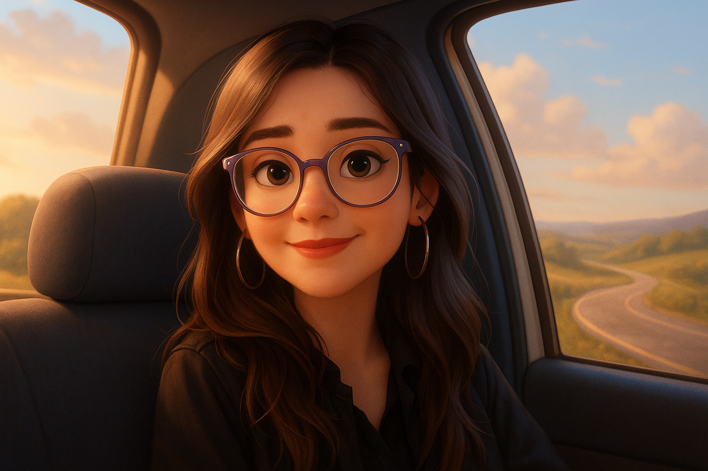

Laura Lourdes Brnich
Estudiante de Ingeniería en Sistemas de Información

Acerca de mí:
Hola, soy Laura Lourdes Brnich, tengo 21 años y soy de Córdoba Capital. Estoy estudiando Ingeniería en Sistemas de Información en la UTN FRC y en paralelo me sigo formando con cursos gratuitos y pagos también, como este. Tengo muchas ganas de aprender y formarme constantemente para ir conociendo más sobre esta industria y encontrar mi camino en este mar inmenso de lenguajes y oportunidades.
Cosas que me gustan hacer:
- Pasar tiempo de calidad con mi familia, mi novio, mis amigas y mascotas.
- Jugar al Age Of Empires II.
- Estar en mi casa.
- Cocinar cosas dulces.
- Dormir mucho.
- Disfrutar de la naturaleza.
- Hacer meditación.
- Aprender sobre desarrollo web.